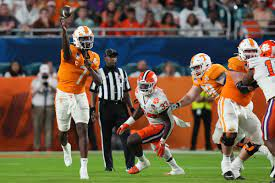

The Battle of the Oranges
MIAMI GARDENS, Fla. -- — The only thing that stopped Tennessee fans from singing “Rocky Top" as time was expiring Friday night was the need to serenade Joe Milton with something else. “M-V-P!" they chanted, over and over. With good reason. Milton — who regained the starting job only after his close friend Hendon Hooker got hurt late in the year — led Tennessee to one of its finest moments in the last couple decades. He completed 19 of 28 passes for 251 yards and three touchdowns, and No. 6 Tennessee never trailed on its way to a 31-14 victory over No. 10 Clemson in the Orange Bowl. “I trust myself, I trust my coaching and I just let it happen," Milton said. The Volunteers finished 11-2 for the first time since 2001, and capped a year when they beat Alabama, LSU and Clemson — programs that combined to win six of the seven most recent College Football Playoff national titles. “All the adversity this group’s faced during their careers, what they’ve done the last 23 months, I couldn’t be prouder of a group of individuals,” said Tennessee coach Josh Heupel, who won a national title as an Oklahoma player in the Orange Bowl. Squirrel White, Bru McCoy and Ramel Keyton had the scoring catches for the Volunteers. Jaylen Wright rushed for 89 yards and Jabari Small had a touchdown run for Tennessee. Cade Klubnik, making his first start for Clemson, completed 30 of 54 passes for 320 yards with two interceptions. But Clemson (11-3) just kept coming up empty on prime scoring chances; the Tigers got into Tennessee territory on nine of their first 10 possessions — and turned those trips into only two field goals. Clemson finished with 484 yards on 101 plays, and still lost by 17. “You don't get any points for yards," Clemson coach Dabo Swinney said. “The name of the game's points. ... You have to finish and execute and we did not do that." Klubnik ran in from 4 yards out to get Clemson within 21-14 with 10:01 left, but Milton connected with Keyton for a 46-yard score on the next Tennessee possession. The Volunteers intercepted Klubnik on a desperation fourth-down heave about a minute later, just about sealing the outcome. “Wish we could have sent out these seniors with a win," Klubnik said. “I think we gave it all we had until the last play." In this very orange Orange Bowl — both teams have it as their primary color — it was the Tennessee hue that was superior. Hooker was there, having flown in about a week ago to be with his team and help Milton prepare for the game. “Blood can’t make us closer,” Milton said. “That’s my brother ’til the end.” Milton opened the scoring with a 16-yard pass to McCoy, and Small’s 2-yard rush pushed the lead to 14-0 with 9:03 left in the half. The nation's most prolific offense wasn't at its best — Tennessee led the nation this year in yards and points per game — but it didn't have to be. Clemson got the ball seven times in the first half, getting inside Tennessee territory all seven times and getting to the Vols 25 on four occasions. Somehow, that only became three points. The other six possessions: a stuffed fake field-goal run by Drew Swinney, the son of the Clemson coach; a punt; three missed field goals by B.T. Potter — the most prolific kicker in school history — and a brutal final drive when Klubnik was tackled on a keeper with 6 seconds left. Clemson was out of timeouts, couldn’t get the field-goal unit on the field and went into halftime trailing 14-3. “Lot of missed opportunities," Dabo Swinney said. Potter opened the second half with a 40-yarder — the 73rd field goal of his career, a school record for the Tigers. But White caught a 14-yard pass with 5 seconds left in the third, giving the Vols a 21-6 lead going into the fourth. When it was over, Milton took a knee, tucked the game ball under his left arm and simply would not let it go. He'll enter 2023 as Tennessee's presumed starter — and expectations will be high for a program that went 20-27 in the four seasons before Heupel's arrival, went 7-6 last year under him and now won an Orange Bowl. “It’s been a fun climb," Heupel said. “The best is yet to come.”
 Highlights of Game